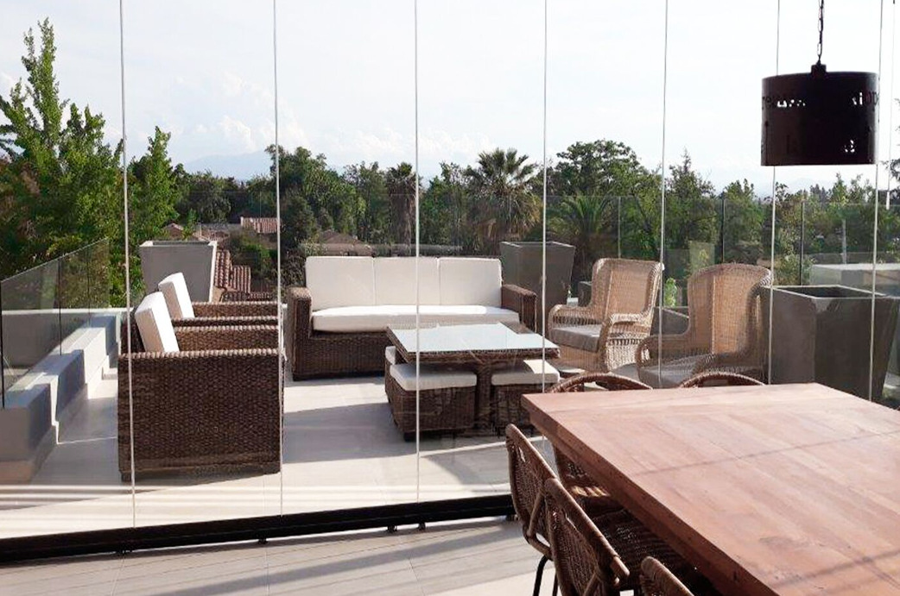
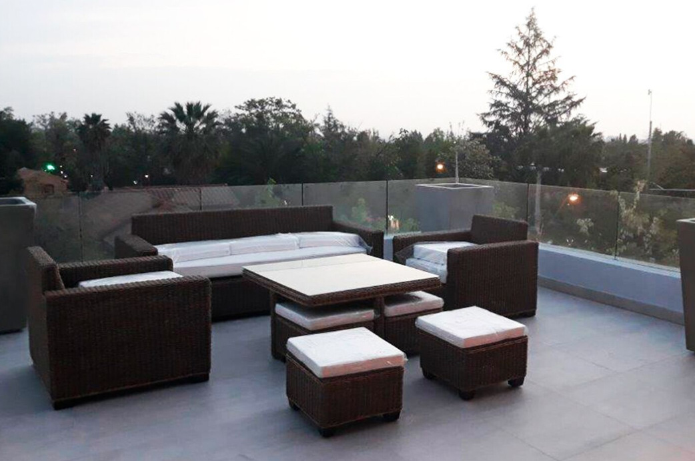

<div class="container project-view">

    <div class="row">
        <div class="col-md-8 project-images">
            
            
        </div>
        <div class="col-md-4">
            <div class="project-info" style=" font-family: Bodoni, 'Bodoni', Bodoni;">
                <h2 align="center" style=" font-family: Bodoni, 'Bodoni', Bodoni;" style="color:rgb(162, 94, 92)">Terraza La Reina</h2>

                <div class="details">
                    <div class="info-text">
                        <span class="title" style="font-size: 20px">Proyecto:</span>
                        <span class="val" style="color:rgb(162, 94, 92)">Terraza La Reina</span>
                    </div>
                    <div class="info-text">
                        <span class="title" style="font-size: 20px">Ubicación:</span>
                        <span class="val" style="color:rgb(162, 94, 92)">Lo Barnechea, Santiago.</span>
                    </div>
                    <div class="info-text">
                        <span class="title" style="font-size: 20px">Año:</span>
                        <span class="val" style="color:rgb(162, 94, 92)">2019</span>
                    </div>
                    <div class="info-text">
                        <span class="title" style="font-size: 20px">Superficie:</span>
                        <span class="val" style="color:rgb(162, 94, 92)">50 m2</span>
                    </div>
                </div>
                <h4 style=" font-family: Bodoni, 'Bodoni', Bodoni;" style="color:rgb(162, 94, 92)">Descripción</h4>
                <p align="justify" style="font-size: 20px">
               Parte importante de nuestro trabajo es hacer de tus espacios un lugar donde te sientas feliz, seguro y confortable. En esta terraza nos dedicamos a reemplazar las protecciones perimetrales por elementos de vidrio templado, aprovechando su condición de transparencia para aumentar la altura de protección sin perjudicar la visibilidad del paisaje y el entorno.</p>

                
                </p>
                        
                        
            </div>
        </div>
    </div>
</div>
